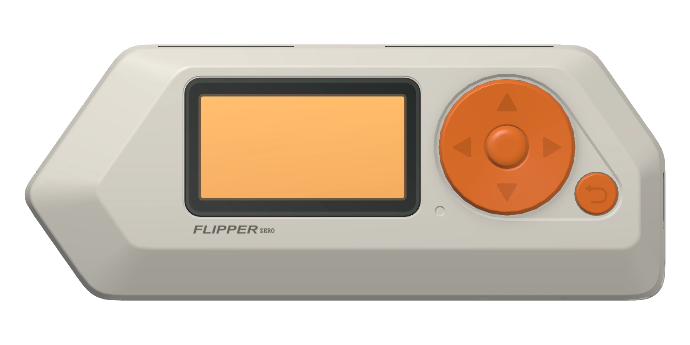

Eddy
Firmware
A new home for your Flipper Zero.
Install Eddy Firmware Try the home screenPlug in.
Insert your microSD card and connect your Flipper Zero with a USB data cable. Close qFlipper so the web installer can use the port.
Load Eddy.
Open the Eddy updater, connect your device, and install the main build. Leave your Flipper plugged in through the restart.
Meet Eddy.
Press the center button for Apps, Settings, and Power off. Try Up from home for brightness and volume.
Back to app selectionSpotify
Try a song on the Flipper. Press OK to play or pause, Right to skip, and Up or Down for volume. Press Left to restart, then Left again for the previous track.
Set up Spotify playbackInstall Eddy.
For Flipper Zero with a microSD card and USB data cable. Use desktop Chrome or Edge for the web installer.